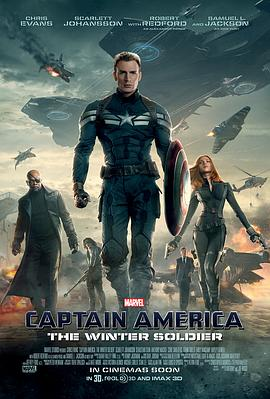

美国队长2 / Captain America: The Winter Soldier
又名：美队2 / 美国队长2：冬日战士 / 美国队长2：酷寒战士(台) / 美国队长2：寒冬战士 / 美国队长：冬兵 / Captain America 2
（背景断层了）95岁的美国队长是怎么回事？完全是超人啊！
作品信息
| 导演 | 安东尼·罗素 / 乔·罗素 |
| 编剧 | 克里斯托弗·马库斯 / 斯蒂芬·麦克菲利 / 乔·西蒙 / 杰克·科比 / 史蒂夫·艾普廷 / 爱德·布鲁贝克 / 迈克尔·拉尔克 |
| 主演 | 克里斯·埃文斯 / 斯嘉丽·约翰逊 / 塞巴斯蒂安·斯坦 / 安东尼·麦凯 / 塞缪尔·杰克逊 / 罗伯特·雷德福 / 寇碧·史莫德斯 / 弗兰克·格里罗 / 马克西米利亚诺·埃尔南德斯 / 艾米丽·万凯普 / 海莉·阿特维尔 / 托比·琼斯 / 斯坦·李 / 卡兰·马尔韦 / 珍妮·艾加特 / 伯纳德·怀特 / 阿兰·戴尔 / 黄经汉 / 盖瑞·山德林 / 乔治·圣皮埃尔 / 萨尔瓦托雷·哈雷布 / 扎克·杜哈梅 / 阿德托库姆布斯·麦克马克 / 亚伦·希梅尔斯坦 / 乔·罗素 / 克里斯托弗·马库斯 / 斯蒂芬·麦克菲利 / 帕特·希利 / 爱德·布鲁贝克 / D·C·皮尔森 / 丹尼·朴迪 / 伯纳德·兹林斯卡斯 / 布兰卡·卡蒂奇 / 乔恩·斯克拉夫 / 查德·托德亨特 / 阿比盖尔·马洛 / 杰里米·马克斯韦尔 / 艾默生·布鲁克斯 / 伊万·帕克 / 里卡多·查康 / 埃迪·J.费尔南德斯 / 乔迪·哈特 / 斯蒂文·卡普 / 温迪胡普斯 / 伊桑·瑞恩斯 / 多米尼克·瑞恩斯 / 小安迪·迈克尔斯 / 罗伯特·克洛特沃西 / 加里·辛尼斯 / 迪恩·巴拉奇 / 库伦·G·钱伯斯 |
| 类型 | 动作 / 科幻 / 惊悚 / 冒险 |
| 制片国家/地区 | 美国 |
| 语言 | 英语 / 法语 |
| 上映日期 | 2014-04-04(美国/中国大陆) / 2014-03-13(加州首映) |
| 片长 | 136分钟 |
| IMDb | tt1843866 |
说过什么
2014-05-03 23:02:25
看过 · 时间来自广播，短评来自标记页
（背景断层了）95岁的美国队长是怎么回事？完全是超人啊！
最后一次看到是 2026-08-01T11:07:09+10:00 · 豆瓣原页